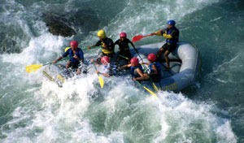
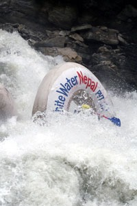

Nepal is home to eight out of the fourteen highest peaks in the world with cultures ranging colorful and intricate Hindus religion to the austerity of the Buddhist monasteries. From the breathtaking heights of the Himalayas the rivers crash down through the foothills, fed by monsoon rains and melting snow, on their way to the Great Plains of the Ganges.
Our mountains, Rivers and everything inbetween creates a wealth of unlimited world class opportunities for great river rafting, kayaking, climbing, mountaineering, biking, hiking and the ever popular trekking adventures in Nepal. Nepal has something to offer to everyone.
We are proud to share our wonderful country, culture and our many years of experience adventuring across Nepal with you. We offer unique opportunity to explore Nepal’s remote countryside from the river.

Nepal has many rivers for you to explore: Trishuli River (1 up to 3 days rafting/kayaking), Seti River (2 days rafting trip), Bhote Koshi River (1 day rafting trip), Kali Gandaki River (3 days rafting trip), Marsyandi River (1 to 2 days rafting/kayaking trip), Sun Koshi River (7 to 9 days rafting trip), Arun River (9 days rafting adventure combining with trek), Karnali River (10 days whitewater rafting and kayaking), Tamur River ( 10 to 11 days rafting adventure combining with 4 days trek).
The water is warm and Nepal houses the world’s most thrilling whitewater in a wide range of difficulties with bug free beaches for camping to top it off.